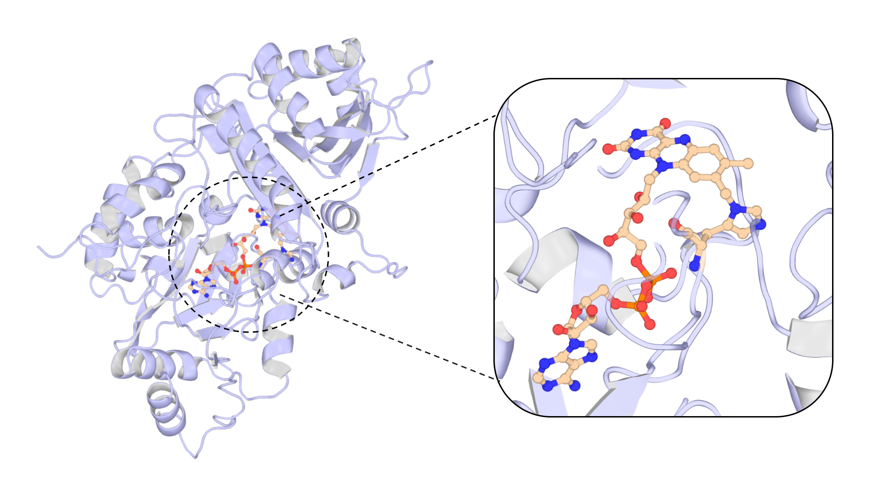
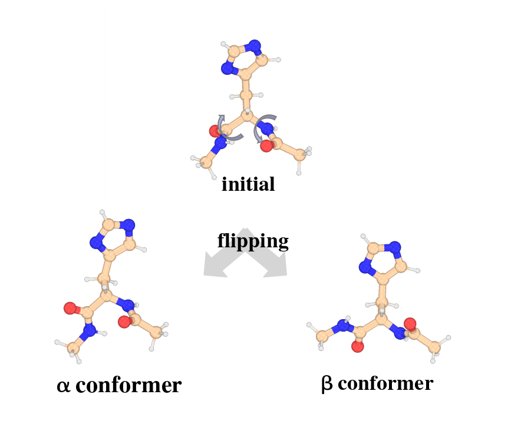
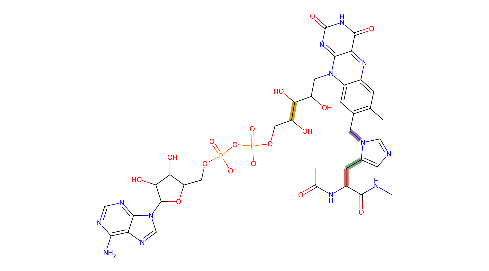

NCAA Tutorial
Overview
This tutorial walks through the NCAA route of parmfit(method=ncaa) in three cases on Morus alba Diels–Alderase (MaDA; Protein Data Bank ID 6JQH), a flavin adenine dinucleotide (FAD)-dependent enzyme whose FAD cofactor is covalently linked to a histidine residue. The input structure MaDA.pdb carries that residue as _89:HIF; it has no force-field template and becomes the exported residue HF1. Case 1 builds the template with torsion fitting off; Case 2 switches torsion fitting on with explicit bonds; Case 3 declares a second residue alongside the first. Every excerpt below is taken from verified runs of the inputs shown here.

Every run writes a <base>.parmfitrun.in file next to the output that echoes your configuration with defaults filled in; watch the log for Unknown left-hand warnings, which flag keys no builder consumed. The reference definition of every key lives in the NCAA manual page and the shared sections of the ParmFit hub; software and input requirements are summarized in the hub's Requirements section.
Case 1 — Building the first residue template
Goal. Build a deployable Amber template for one noncanonical residue (here HIF89, exported as HF1) with default fitting: chg_fit=resp, bonded=mseminario, pro_ff=ff14SB. Torsion fitting — on by default — is explicitly switched off here so the first run isolates the charge and template pipeline.
Input. The selector picks the residue; ncaa_resnames renames it for export; charge pairs with the declared residue. The route keys live in the sidecar:
#model=uma(size=uma-s-1p1)
#parmfit(method=ncaa,input=NCAA1.in)
#device=gpu0
PDB MaDA.pdbNCAA1.in
# NCAA route settings; declare method=ncaa in #parmfit(...) and reference this file via input=
# Only non-default entries are listed; the generated parmfitrun.in shows every resolved value.
ncaa_resids=HIF89
ncaa_charges=0
ncaa_resnames=HF1
chg_level=HF/6-31G(d)
torsionfit=falseWhat happens.
- Graph matching. Standard residues are matched against the active
ff14SBtemplates, receiving canonical atom names, types, and net charges;CYX/CYMis decided by disulfide detection. - Capped models. ACE (acetyl)–target–NME (N-methylamide) α and β conformers are built and optimized with an MLIP (machine-learned interatomic potential), backbone and caps frozen, so only the sidechain relaxes — the backbone is rotated to the α/β targets (φ,ψ) ≈ (−60°, −40°) and (−120°, 140°) for an L residue, with the signs reversed for a D residue.
- Charges. Gaussian evaluates the ESP (electrostatic potential) of both capped conformers; AmberTools then performs one joint two-stage RESP (restrained electrostatic potential) fit over them.
- AmberTools template. antechamber/prepgen/parmchk2 build the initial prepin/frcmod.
- Refinement. An MLIP Hessian + mSeminario update bond/angle terms. TorsionFit is skipped, but its improper-refit candidates are still reported — and kept at parmchk2 estimates because
torsionfit=false. - Deployment. Refined templates, processed PDB (Protein Data Bank), and tleap input are written, and tleap validation runs.

The resolved configuration. Next to NCAA1.out, MAPLE writes NCAA1.parmfitrun.in:
# parmfitrun.in - resolved parmfit configuration for method=ncaa
# Generated by MAPLE parmfit; values are the user config entries with defaults filled in.
# This file is itself a valid parmfit config and can be referenced via input=.
# residues declared for the NCAA flow (built, then folded or frozen)
ncaa_resids = HIF89
# 1:1 with ncaa_resids
ncaa_charges = 0
# 1:1 with ncaa_resids; keep within 3 characters (PDB limit)
ncaa_resnames = HF1
# multiplicity for the NCAA QM jobs
ncaa_mults =
# (ff14SB, ff19SB)
pro_ff = ff14SB
... (open the real file after a run to see every resolved key)Reading the output. The banner's PDB diagnostics sort every residue into one of three buckets. matched counts residues whose complete graph matched an active Amber template — they receive canonical names, atom types, and charges. backbone_only counts residues whose connected peptide backbone was recognized but which matched no complete template — the NCAA candidates; the target appears there. unmatched counts residues with no template at all, typically nonprotein ligands or cofactors — they are reported for explicit declaration (lig_resids in MetalAA, or a separate NCAA run) rather than guessed. Disulfide decisions appear under template overrides:
======================================================================
Parmfit NCAA
======================================================================
Target: _89:HIF (protein)
PDB residue templates: matched=516, backbone_only=1, unmatched=0
non-standard (matched backbone only): _89:HIF (target)
template overrides (renamed): _10:CYM (CYX->CYM), _74:CYM (CYX->CYM)
PDB target charge: _89:HIF = 0 (from your input)The start lines and stage trace follow — note the improper candidates reported even though torsion fitting is off:
[NCAA] MLIP model preparation + reference optimization ...
NCAA target selector: HIF89
residue name: HF1
chirality: L
net charge / spin multiplicity: 0 1
protein ff: ff14SB
bonded refinement: mseminario
charge fitting: resp
charge level: HF/6-31G(d)
[NCAA] atomic charge fitting (resp) ...
[NCAA] AmberTools template build ...
[NCAA] MLIP Hessian + mSeminario ...
[NCAA] TorsionFit skipped ...
[TorsionFit] improper refit targets detected -> skipped because torsionfit=False.
improper refit targets: 2 (parmchk2 estimates kept)
[NCAA] writing refined templates + tleap input ...
[NCAA] tleap validation ...
[NCAA] route completed; final summary follows.The result block closes with the production tleap command and its Tleap status:
======================================================================
PARMFIT NCAA RESULT
======================================================================
Status: completed
Route: NCAA
Target: _89:HIF
Residue name: HF1
Chirality: L
Protein ff: ff14SB
Res charge/spin-multi: 0 1
Charge fitting: resp
Charge level: HF/6-31G(d)
Target charge: 0
Actual charge: -0.00000200
Charge MOL2: NCAA1_work/ncaa/HIF89/NCAA1_capped.mol2
Main products:
refined prepin: NCAA1_work/HF1_maple.prepin
refined frcmod: NCAA1_work/HF1_maple.frcmod
tleap PDB: NCAA1_work/NCAA1_ncaa_tleap.pdb
tleap input: NCAA1_work/NCAA1_ncaa_tleap.in
Stage timing:
charge fitting 9m 41s
Hessian + mSeminario 1m 20s
model preparation + reference 52s
tleap validation 7s
AmberTools template build 0s
final export 0s
Next step:
cd NCAA1_work
tleap -s -f NCAA1_ncaa_tleap.in |tee NCAA1_ncaa_tleap.out
Tleap status:
Errors: 0
Warnings: 4
Notes: 0Checkpoint
Before moving on, confirm: the target residue appears in the diagnostics as backbone_only; tleap reports Errors: 0; the processed PDB carries the exported name HF1 at position 89; the per-residue work directory NCAA1_work/ncaa/HIF89/ holds the conformers and charge files. Read the remaining tleap Warnings — they usually concern the new template's atom types.
Case 2 — Fitting torsions over explicit bonds
What changed. One switch and one list: torsionfit=true (back to the default) and torsion_bonds naming the four residue-local bonds to refit — here the two sidechain chi angles, the covalent His–FAD link, and the ribityl chain of the cofactor.
Input. The added lines in NCAA2.in:
# Sidechain torsion fitting on four representative residue-local bonds:
# 3-8 chi1 (CA-CB), 8-11 chi2 (CB-imidazole C4), 6-60 covalent His-FAD link (N2-CH2), 22-25 ribityl (C8-C9)
torsionfit=true
torsion_bonds=3-8,8-11,6-60,22-25What happens. Each listed bond is scanned and refitted, and the improper-refit candidates that Case 1 merely reported are now actually refitted. All of this lands in NCAA2_work/torsionfit/HIF89/:
NCAA2_work/torsionfit/HIF89/
NCAA2_torsionfit_9-14_scan_final.xyz # 3-8 chi1
NCAA2_torsionfit_14-17_scan_final.xyz # 8-11 chi2
NCAA2_torsionfit_12-66_scan_final.xyz # 6-60 His-FAD link
NCAA2_torsionfit_28-31_scan_final.xyz # 22-25 ribityl
NCAA2_torsionfit_17-17_scan_final.xyz # improper refits (self-pairs),
NCAA2_torsionfit_46-46_scan_final.xyz # each scanned in pos and neg directions
... (per-bond .out logs, pos/neg trajectory and optimized xyz variants)Watch the index space: torsion_bonds uses residue-local 1-based indices (ACE/NME caps not counted), but the scan files are named with the capped-model serials — the ACE cap contributes 6 atoms, so residue-local 3-8 appears as 9-14, 6-60 as 12-66, and so on. The self-referential pairs (17-17, 46-46) are the improper refits. Each i-j entry names the central bond of the scanned dihedral — the order within a pair is free (6-10 and 10-6 are the same bond; scan files use the ascending form) — and the scanned dihedral is the proper-dihedral term the topology already defines over that bond.
The stage timing shows what the switch costs — TorsionFit balloons from nothing to the dominant stage:
Stage timing:
TorsionFit 1h 34m 19s
charge fitting 13m 31s
Hessian + mSeminario 1m 13s
model preparation + reference 1m 06s
tleap validation 6s
Checkpoint
Confirm every declared bond has a scan file (translate residue-local to capped serials with the +6 offset of this ACE cap); confirm the improper self-pairs were refitted, not just reported. Keep the explicit list short and meaningful — each bond costs a full constrained scan.
Case 3 — Two residues and a sidecar config
What changed. A second residue — TRP482, exported as WF1 — is declared alongside the first, each with its own charge and exported name. ; now separates per-residue torsion-bond groups. Bold lines are new or have changed in this case.
Input.
#model=uma(size=uma-s-1p1)
#parmfit(method=ncaa,input=NCAA3.in)
#device=gpu0
PDB MaDA.pdbExternal config.
NCAA3.in
# Two residues declared together; charges/names pair 1:1 with ncaa_resids
ncaa_resids=HIF89,TRP482
ncaa_charges=0,0
ncaa_resnames=HF1,WF1
chg_level=HF/6-31G(d)
# Per-residue torsion bond groups separated by ';':
# HIF89: 3-8 chi1, 8-11 chi2, 6-60 covalent His-FAD link, 22-25 ribityl
# TRP482: 5-6 (CB-CG)
torsionfit=true
torsion_bonds=3-8,8-11,6-60,22-25;5-6What happens. Each declared residue runs the full Case-1/Case-2 pipeline independently — its own capped conformers, charge fit, template build, and torsion fitting — and the log shows two complete stage blocks, one per selector:
Target: _89:HIF, _482:TRP (protein)
PDB residue templates: matched=516, backbone_only=1, unmatched=0
non-standard (matched backbone only): _89:HIF (also note)
template overrides (renamed): _10:CYM (CYX->CYM), _74:CYM (CYX->CYM)
PDB target charges: _89:HIF = 0, _482:TRP = 0 (from your input)
[NCAA] MLIP model preparation + reference optimization ...
NCAA target selector: HIF89
residue name: HF1
...
[NCAA] route completed; final summary follows.
[NCAA] MLIP model preparation + reference optimization ...
NCAA target selector: TRP482
residue name: WF1
...
[NCAA] route completed; final summary follows.
[NCAA] tleap validation ...Work products are per residue — ncaa/HIF89/ and ncaa/TRP482/, torsionfit/HIF89/ and torsionfit/TRP482/, HF1_maple.prepin/frcmod and WF1_maple.prepin/frcmod — but the deployment is single: one combined NCAA3_ncaa_tleap.in loads both templates and validates them together. The result block reports the last residue, then the route adds a one-line build summary:
Status: completed
Route: NCAA
Target: _482:TRP
Residue name: WF1
...
Target charge: 0
Actual charge: 0.00000000
Charge MOL2: NCAA3_work/ncaa/TRP482/NCAA3_capped.mol2
Main products:
refined prepin: NCAA3_work/WF1_maple.prepin
refined frcmod: NCAA3_work/WF1_maple.frcmod
tleap PDB: NCAA3_work/NCAA3_ncaa_tleap.pdb
tleap input: NCAA3_work/NCAA3_ncaa_tleap.in
...
NCAA residues built: _89:HIF -> HF1, _482:TRP -> WF1Checkpoint
Each residue's Actual charge must close to its own ncaa_charges value — the residue's atoms form one charge group constrained to that value. Verify both template pairs exist in the work root and that the combined tleap input loads both (HF1 and WF1). If a selector is not unique in the PDB, the run stops with an error before any QM (quantum-mechanical) work starts; add a chain id to disambiguate. Declaring a standard residue like TRP is legitimate when you deliberately want it rebuilt through the NCAA flow — residues that already have an $AMBERHOME template normally never need declaring.
Where to Go Next
- NCAA manual — parameter reference, charge-fitting details, peptide boundary terms, and limits.
- ChargeFit, QM reference, and TorsionFit on the ParmFit hub — the stages these routes share, documented once on the hub.
- CORR tutorial and MetalAA tutorial — simple worked examples for the other routes.
- Run archive. All inputs, configs, logs, and work-directory products behind every excerpt on this page are deposited at Zenodo: 10.5281/zenodo.23126301.